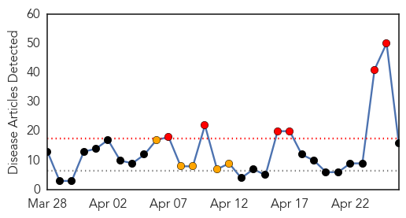

30 Day Trends
Web: 6 alerts, 5 warnings
Twitter: 0 alerts, 0 warnings
Top Articles:
- 0.989
- Vaccine urged amid measles outbreak — The Medina County Gazette
- 0.978
- Vietnam ministry warns of spread of measles during coming holidays
- 0.967
- Measles: California takes brunt of troubling outbreaks
- 0.958
- Health officials combating Minnesota’s 1st measles case of the year
- 0.951
- Measles case in Lloydminster brings total Sask. cases to 12
- 0.937
- Measles off to a quick start, as cases trend up
- 0.910
- The Measles Is Back But Doctors Don't Know How to Identify It
- 0.908
- Clinics helping area residents get measles vaccine - The Daily Record
- 0.899
- Gov. Cuomo reminds New Yorkers to vaccinate against measles « The In Box
- 0.857
- 16 cases of measles confirmed among Amish
- 0.854
- With uptick in U.S. measles cases, CHOP doctor urges physicians to be vigilant — NewsWorks
- 0.827
- New Yorkers Urged To Get Measles Vaccinations As Outbreaks Continue « CBS New York
- 0.785
- Kicking off annual global immunization campaign, UN asks: 'Are you up to date?'
- 0.770
- Success of Immunizations Becomes Its Weakness
- 0.679
- Vigilance for measles must be maintained
- 0.569
- Amish volunteers to the PH brought measles to Ohio – report
Top Tweets:
-
No tweets found for Apr 26, 2014
Web/News Articles
Tweets

Article Locations